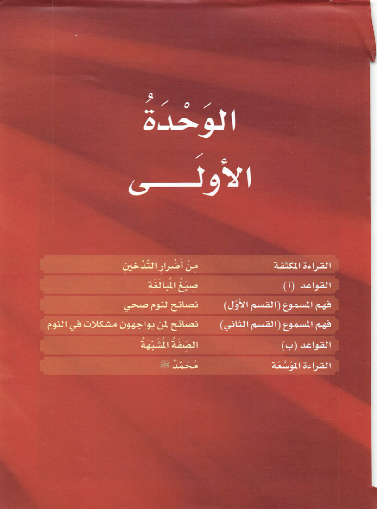

最难的那一册 · 样张
「阿拉伯语为全人类」项目的最高一册：全阿语授课、直通大学学业。修完这册，读报、议事、听讲座都在射程内。
原书配套录音，来自公开资料库存档，共 111 段覆盖全册。

انْتَشَرَ التَّدْخينُ، وكَثُرَتْ نِسْبَةُ المُدَخِّنينَ في هذا العَصْرِ، ممّا يُنْذِرُ بازْدِيادِ المُشْكِلاتِ الصِّحِّيَّةِ بَيْنَهُم. فقَدْ أَظْهَرَتْ دِراساتٌ كَثيرَةٌ أَنَّ التَّدْخينَ يُعَرِّضُ الصِّحَّةَ لِكَثيرٍ مِنَ الأَخْطارِ، وأَنَّهُ سَبَبٌ لِكَثيرٍ مِنَ الأَمْراضِ، مِثْلِ: أَمْراضِ القَلْبِ، وسَرَطانِ الرِّئَةِ، والالْتِهابِ الرِّئَوِيِّ؛ كما أَنَّهُ يُسَبِّبُ الشَّيْخوخَةَ، ويَزيدُ نِسْبَةَ الوَفَيات.
吸烟在这个时代蔓延开来，烟民比例大增，这预示着他们的健康问题将不断增多。大量研究表明：吸烟让健康暴露在诸多危险之下，是许多疾病的成因——心脏病、肺癌、肺炎；它还催人早衰，并推高死亡率。
صَحيحٌ أَنَّ كُلَّ شيءٍ بِقَضاءِ اللهِ، وأَنَّ المَوْتَ والحَياةَ والمَرَضَ والصِّحَّةَ كُلَّها بِيَدِ اللهِ، ولكنْ يَجِبُ أَنْ نَتَذَكَّرَ دائِماً أَنَّ اللهَ سُبْحانَهُ وتَعالى يَقولُ: ﴿ولا تُلْقُوا بِأَيْديكُمْ إلى التَّهْلُكَةِ﴾ ويَقولُ: ﴿ولا تَقْتُلوا أَنْفُسَكُمْ إنَّ اللهَ كانَ بِكُمْ رَحيماً﴾. والتَّدْخينُ قَتْلٌ لِلنَّفْسِ، وانْتِحارٌ بَطيءٌ.
诚然，万事皆有真主的前定，生死病健都在真主手中；但我们必须常记真主之言：「你们不要亲手把自己投入毁灭」，又说：「你们不要自杀，真主确是怜悯你们的」。吸烟即是戕害生命，是一场缓慢的自杀。
这册的难度：整段议论文、引经据典、零翻译零拼音——这是给要「用阿语思考」的人准备的。